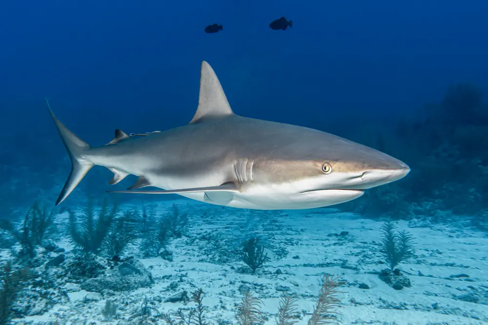
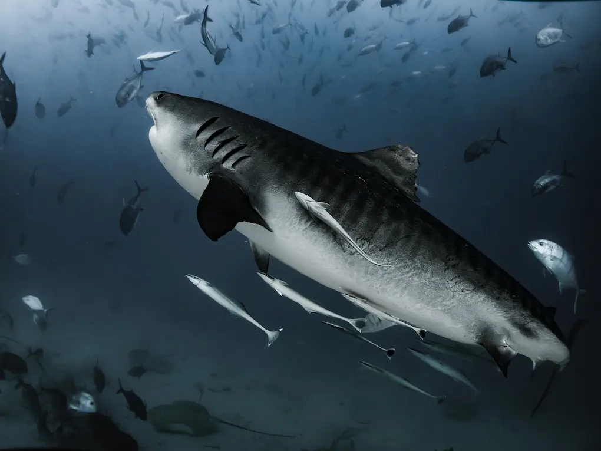
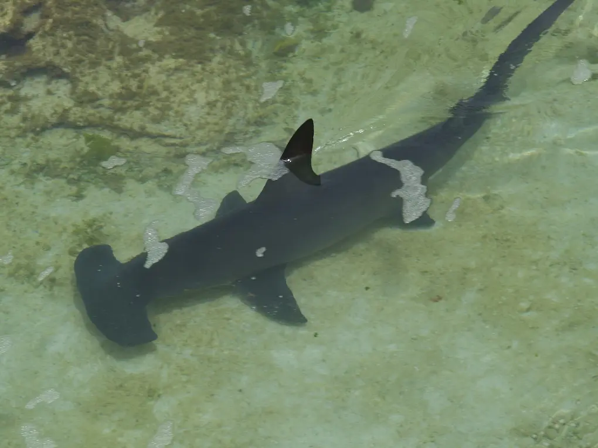

Bull Shark
Bull sharks are stocky and heavy with a short blunt nose.
Usually found in water less than 100 feet deep.
"Gray with a faint white band on its flank. The fin tips of young sharks are often dusky. Sometimes a bull shark’s
back appears grazed, but these areas are actually bald patches caused by fluke infections
that result in loss of dermal denticles from the skin."
Fun Fact: The bull sharks top and bottom teeth are different. The top are triangular
and serrated. The bottom are slender with fine surration.

Tiger Shark
Tiger sharks are very wide sharks. They come in all sorts of colors including
brown, olive, grey, dirty yellow, and even their stomachs can be colored gray or white.
Youthful tiger sharks have very strong stripes that fade with age.
Tiger sharks are nocturnal, coming inshore to feed at night.
Fun Fact: The largest female tiger shark ever caught was 24 feet long and 3,110 pounds heavy.

Hammerhead Shark
Hammerhead sharks are easily recognized with their unique head shapes that make up their name.
Typically they are dark olive green to dark brownish with white tummies.
"...the largest of the hammerhead sharks.
The shark grows to a length of at least 18.3 feet [5.6 m], and may attain a length
of more than 20 feet [6.1 m]..."
Fun Fact: The Great Hammerhead shark loves to eat stingrays and catfish.